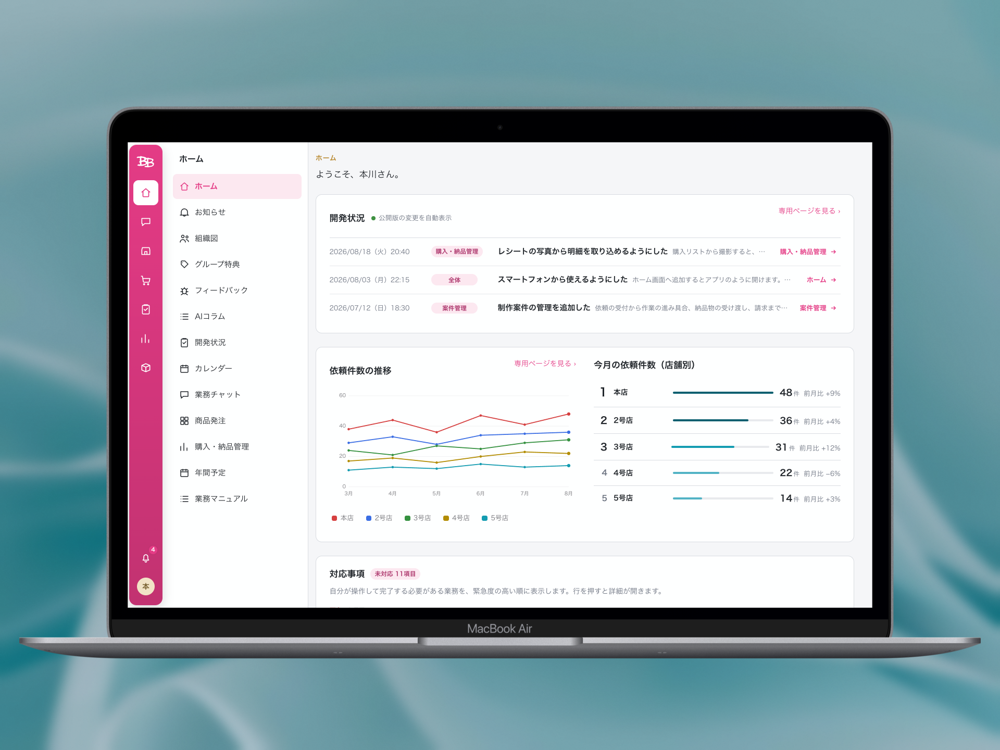
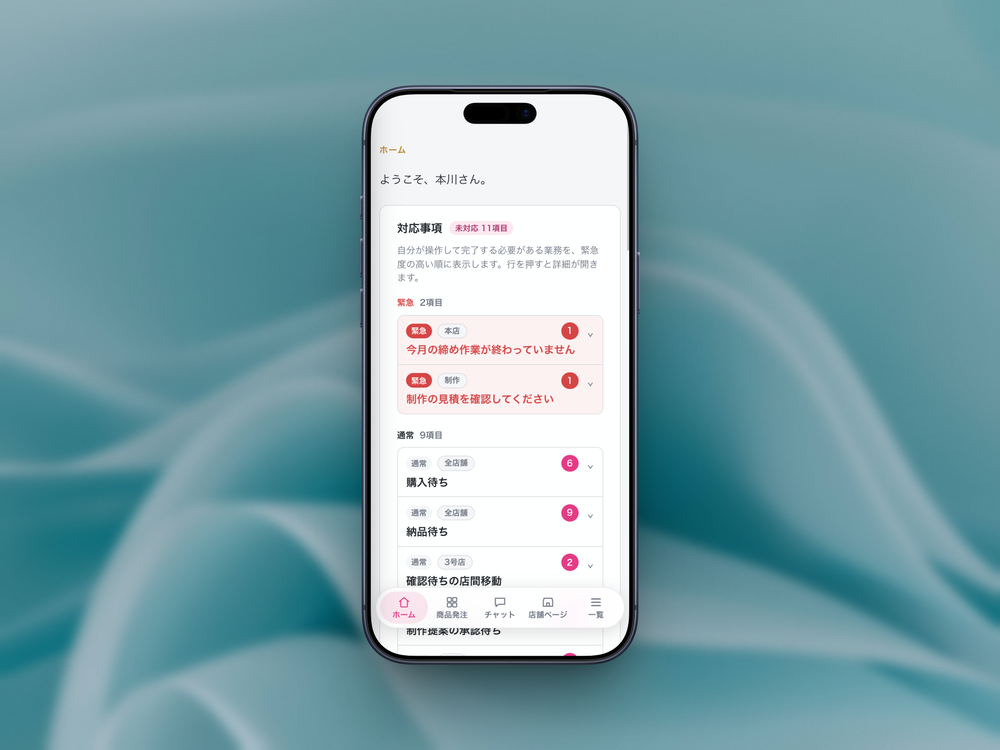

7店舗の業務を扱う社内Webシステム
BBグループ 社内ポータル
- 要件定義
- UI設計
- フロントエンド
- データベース


- OVERVIEW
- BBグループ7店舗で使用する社内ポータルを制作しています。対象は店舗運営、受発注、売上管理、月末処理などです。
- TERM
- 2026年〜／継続開発中
- ROLE
- 3名で制作
- SCOPE
- 業務整理・要件定義／UI・データベース設計／フロントエンド・認証・権限実装／検証・改善
- AREAS
-
- 店舗運営
- 受発注管理
- 売上・利益
- 月末処理
- 購買・調達
- 全社共通
- TECHNOLOGY
- HTML／CSS／JavaScript／Supabase／Cloudflare Pages
- TOOLS
- Claude Code／Codex
- DEVICE
- PC／スマートフォン
仕入価格と従業員情報を含む画面、コード、URLは公開していません。
CHALLENGE
課題
業務の進み具合を一か所で確認できなかった
必要な情報の保管先と、誰がどこまで対応したかを確認する方法が、店舗や業務ごとに異なっていました。責任者への聞き取りをもとに各業務の流れと担当者を整理し、店舗運営、受発注、売上管理、月末処理などを一つのポータルで扱えるようにしました。
IMPACT
購買業務で変えたこと
-
01
購買業務の月間作業を約30時間から約5時間へ短縮する見込み
従来の運用では、紙の取りまとめや転記、買い出し、納品、請求書作成に月約30時間かかっていました。システム化後も買い出しと納品には約5時間かかるため、それ以外の月約25時間を削減できる見込みです。現在は試験中のため、実績ではなく試算値です。
-
02
4か所への記録を1回の入力へ
これまでは、依頼内容を紙に書き、スマートフォンで撮影してLINEへ載せ、買い物リストと請求書へ書き写していました。システム上では、最初に入力した内容を購入、納品、検品、月末請求まで引き継げるようにしました。4か所へ記録する工程が1回の入力に変わり、記載漏れや写し間違いの原因も取り除きました。
-
03
担当者1人の記憶に頼っていた価格情報を約78品目分登録
以前の価格表は2024年9月で更新が止まり、その後の価格は担当者1人へ確認する必要がありました。約78品目の価格、仕入先、税率を登録し、変更履歴が残る形にしました。必要な情報を画面で確認できるようにしました。
STATUS